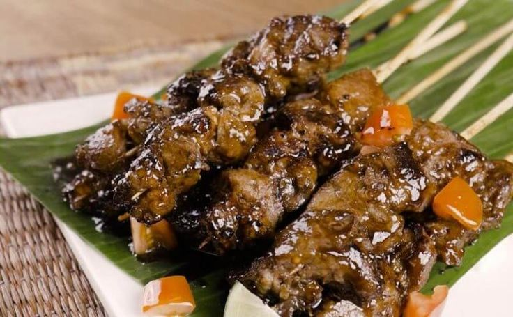

SATE MANGGARAI
Sate Maranggi adalah salah satu makanan khas dari Purwakarta, Jawa Barat. Dagingnya empuk, dibumbui dengan rempah-rempah khas, dan biasanya disajikan dengan nasi atau ketan.
Sate Maranggi adalah salah satu makanan khas dari Purwakarta, Jawa Barat. Dagingnya empuk, dibumbui dengan rempah-rempah khas, dan biasanya disajikan dengan nasi atau ketan.